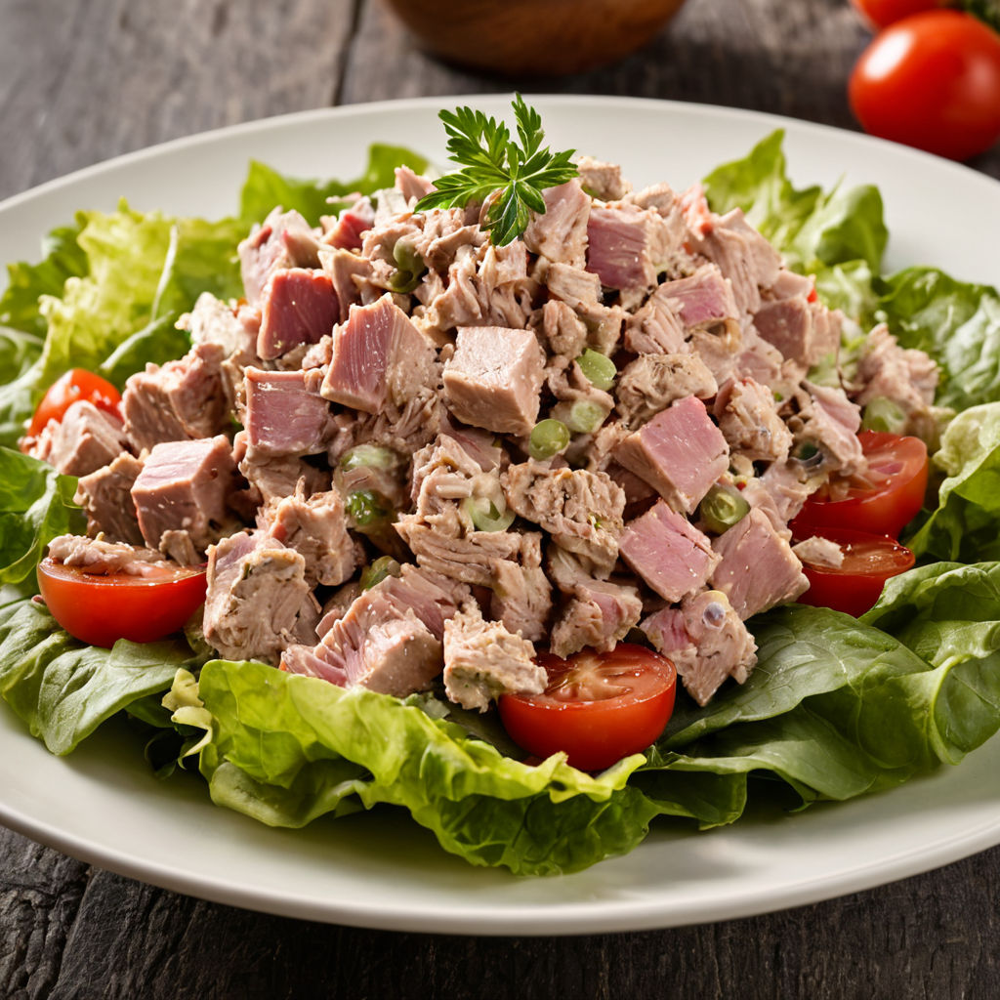

Hozzávalók:
- 2 konzerv tonhal olajban vagy vízben (lecsöpögtetve)
- 1-2 ek apróra vágott lilahagyma vagy újhagyma
- 2 ek apróra vágott zellerszár
- 2 ek apróra vágott friss petrezselyem vagy korianderlevél
- 1/4 csésze majonéz vagy görög joghurt
- 1 tk dijoni mustár (opcionális)
- 1 ek friss citromlé vagy limelé
- Só és frissen őrölt fekete bors ízlés szerint
- Friss citromkarika a díszítéshez (opcionális)
- Zöld salátalevelek vagy pirítós a tálaláshoz (opcionális)
Elkészítés:
- Egy közepes méretű keverőtálban keverd össze a lecsöpögtetett tonhalat, az apróra vágott lilahagymát vagy újhagymát, a zellerszárat és a friss petrezselymet vagy korianderlevelet.
- Adj hozzá 1/4 csésze majonézt vagy görög joghurtot a tonhalhoz, és alaposan keverd össze.
- Ha szeretnéd, keverj hozzá 1 teáskanál dijoni mustárt is a tonhalhoz a plusz ízért.
- Adj hozzá 1 evőkanál friss citromlevet vagy limelevet a tonhalsalátához, majd sózd és borsozd meg ízlés szerint.
- Keverd össze az összetevőket alaposan, hogy a tonhalsaláta jól összeérjen.
- Ha szeretnéd, díszítheted a tonhalsalátát néhány friss citromkarikával a tetején.
- Tálald a tonhalsalátát friss zöld salátalevelekkel vagy pirítóssal, és élvezd az ízletes és tápláló fogást!